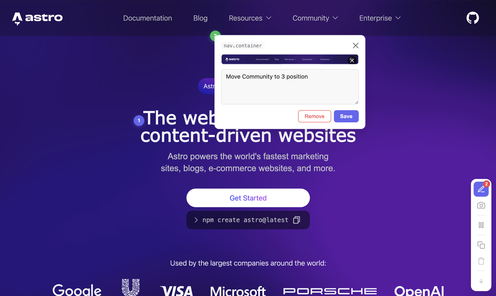

h1.text-balance
nav.container
.instruckt/screenshots/01KKBC...png
Use instruckt.get_screenshot MCP tool to view screenshots.Use instruckt.resolve to mark resolved.
instruckt.get_screenshot
instruckt.resolve